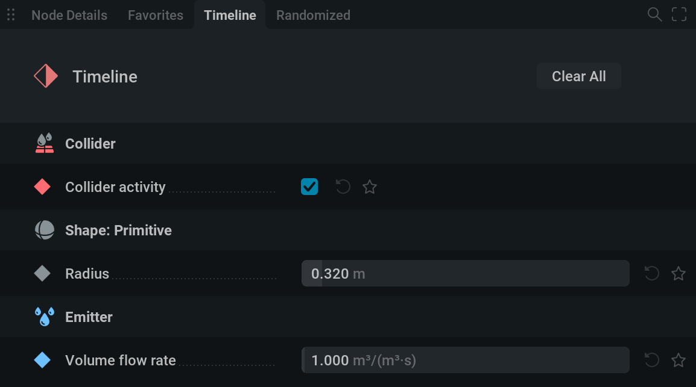
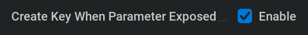
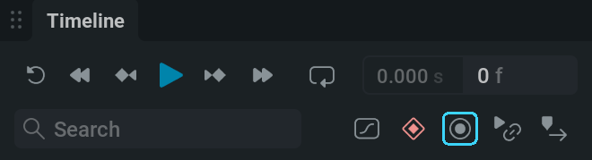

关键帧动画#
设置关键帧#
让我们让它动起来！

LiquiGen 中的大多数参数都可以设置关键帧动画。这意味着你可以在指定帧上设置数值，让参数随时间变化。
假设我们想让球体上下移动。
这意味着我们需要让它的 Z 位置随时间变化。
选择 Shape: Primitive 节点，并找到 Position 参数；它位于 Node Details（节点详情） 选项卡中。

单击
 旁边的圆形图标，将该参数的覆盖状态设置为
旁边的圆形图标，将该参数的覆盖状态设置为  Timeline Override。
Timeline Override。单击参数旁边的图标会在不同覆盖状态之间循环切换。因此，如果你现在想回到
No Override，例如就需要单击该图标两次。

将覆盖状态设置为 Timeline Override。
该参数会出现在 Timeline（时间轴）选项卡中。
{kind=link}

该参数会出现在 Timeline Editor（时间轴编辑器）中。

如果 Create Key When Parameter Exposed（参数公开时创建关键帧）（位于 Settings/Preferences…/General）已勾选，则蓝色播放头处会出现一个使用当前值的关键帧。
{kind=link}

接下来用关键帧让球体上下移动！
也可以通过在 Timeline Editor（时间轴编辑器）中更改参数值来设置关键帧。
如果  Toggle Timeline Autokey A 已开启，在视口中移动球体，或在属性面板中修改数值，都会在蓝色播放头指定的帧上创建一个使用新数值的关键帧。
Toggle Timeline Autokey A 已开启，在视口中移动球体，或在属性面板中修改数值，都会在蓝色播放头指定的帧上创建一个使用新数值的关键帧。
如果 Snap keys to frames  已启用，关键帧只能放置在整数帧号上。否则，关键帧可以放置在两帧之间的任意位置。
已启用，关键帧只能放置在整数帧号上。否则，关键帧可以放置在两帧之间的任意位置。
这样就得到一个上下移动的球体了！
Timeline Editor（时间轴编辑器）#
查看关键帧#
首先，让关键帧在时间轴编辑器中合适地显示。可以使用右上角的图标完成这一点。
 平移并缩放时间轴，使所有关键帧完整适配到视图中。
平移并缩放时间轴，使所有关键帧完整适配到视图中。 平移并缩放时间轴，使选中的关键帧完整适配到视图中。
平移并缩放时间轴，使选中的关键帧完整适配到视图中。 将 Curve Editor 中的垂直缩放重置为默认值。使用 Shift +
将 Curve Editor 中的垂直缩放重置为默认值。使用 Shift +  单击时，也可以将水平缩放重置为默认值！
单击时，也可以将水平缩放重置为默认值！ 如果想用最大的屏幕空间编辑关键帧，可以将面板切换为全屏。
如果想用最大的屏幕空间编辑关键帧，可以将面板切换为全屏。
可以使用以下操作手动浏览时间轴：
平移时间轴：按住鼠标中键并拖动，或使用时间轴编辑器顶部的滚动条。
缩放时间轴：按住 Ctrl 并滚动。请注意，缩放中心位于光标位置。
编辑关键帧#
可以使用时间轴编辑器按需编辑关键帧。下面看看这里能做哪些操作。
创建关键帧：双击
，或 Shift 单击。移动关键帧：按住 LMB 并拖动。如果 Snap keys to frames
 已启用，关键帧每次都会按整帧移动。
已启用，关键帧每次都会按整帧移动。框选多个关键帧：按住 LMB 并拖动。
选择多个关键帧：按住 Ctrl + LMB.
选择所有关键帧：使用 Ctrl + A
复制关键帧：使用右键菜单或按 Ctrl + C
剪切关键帧：使用右键菜单或按 Ctrl + X
粘贴关键帧：使用右键菜单或按 Ctrl + V
删除关键帧：使用右键菜单或按 Delete 键。
缩放关键帧动画：使用 Shift + Alt + LMB 拖动，并以第一个关键帧为枢轴进行缩放。如果你想重新调整一段动画的时间，这会很有用。
- 对齐关键帧：右键单击所选关键帧，并从 Align 菜单中选择选项，可将关键帧左对齐或右对齐。为多个参数放置关键帧时，对齐有助于整理并完善时间轴。
Left 会将所有选中的关键帧移动到第一个关键帧的位置。
Right 会将所有选中的关键帧移动到最后一个关键帧的位置。
将关键帧吸附到最近的整数帧号：使用 Snap To Frames 选项，该选项位于右键菜单中。
Curve Editor（曲线编辑器）#

可以使用以下图标切换 Curve Editor： 
此编辑器会以可视方式展示数值随时间的变化。
时间轴编辑器中的所有操作在这里同样适用，但这里还能执行和查看一些额外内容。
查看关键帧#
按住 Ctrl + Shift 并滚动，即可垂直缩放时间轴。垂直放大后，可以更清楚地查看图表中的细微变化。
使用滚轮可同时水平和垂直缩放时间轴：

使用
单击并拖动，可以同时水平和垂直平移。选择多个关键帧后，可以在右键菜单中找到 Fit View 选项，将所选关键帧按水平、垂直或两个方向适配到视图中。
编辑关键帧#
使用 Ctrl + Shift +
单击并拖动，可垂直移动一个或多个关键帧（更改关键帧值）。使用
单击并拖动，可自由地水平和垂直移动一个或多个关键帧。- 在 Align 右键菜单中还会增加两个选项：
Top 会将所有选中的关键帧上移到与最高数值关键帧相同的值。
Bottom 会将所有选中的关键帧下移到与最低数值关键帧相同的值。
Interpolation Mode（插值模式）#
“Interpolation Mode（插值模式）”定义从一个关键帧到另一个关键帧时数值的插值方法。
可以在右键菜单中更改关键帧的 Interpolation Mode（插值模式）。
- 可用选项如下：
Constant 会在到达关键帧时立即完全切换数值，没有中间过渡值。这是为复选框和下拉菜单制作动画时的默认模式，因为它们不存在中间值。
Linear 会在一个关键帧到另一个关键帧之间绘制直线，并显示在 Curve Editor（曲线编辑器）中。数值会以恒定速度从一个关键帧移动到另一个关键帧。
Smooth 会在一个关键帧到另一个关键帧之间生成平滑曲线，避免数值出现生硬过渡。
Bézier 会根据 Bézier 手柄对数值进行插值。使用此模式时，选中单个关键帧后可以看到 Bézier 手柄。可以通过 LMB 并拖动 Bézier 手柄末端的点来调整插值。曲线平缓的部分表示数值变化较慢，曲线陡峭的部分表示数值变化较快。
- 使用 Bézier 模式时，可以使用几种手柄类型；它们同样位于右键菜单中。
Aligned 手柄可以自由移动，方向和长度都不受限制。对于此类型，一个手柄始终位于另一个手柄的反方向，并且长度相同。
Free 两侧手柄可以彼此独立地任意移动。
Auto Clamped 这是默认行为。对于此类型，手柄绝不会越过前一个或后一个关键帧。请注意，修改手柄后，类型会被设置为 Aligned。
Auto Vectored 这会让左侧手柄指向前一个关键帧，右侧手柄指向后一个关键帧。请注意，修改手柄后，类型会被设置为 Free。
始终可以点击 Reset Handle（位于右键菜单中），将所选关键帧的 Bézier 手柄重置为默认值。
请注意，也可以在 Timeline Editor（时间轴编辑器）中更改这些设置，但无法看到它们对曲线产生的效果，也无法修改 Bézier 曲线。
Timeline Recording（时间轴录制）#
{kind=link}

时间轴录制可以把你对参数的手动更改实时转换为关键帧。这适合快速制作动画，或给动画加入一些手动控制的感觉。
进行一次时间轴录制需要以下步骤：
将目标参数设置为 Timeline Override。也就是用
单击参数旁边的 圆形图标。 图标会出现在参数旁边。
单击
 图标，或按 Shift + R 开始录制。
图标，或按 Shift + R 开始录制。执行你希望录制下来的参数更改。
要停止录制，可以再次切换
时间轴录制，  重置模拟，或
重置模拟，或  暂停模拟。
暂停模拟。